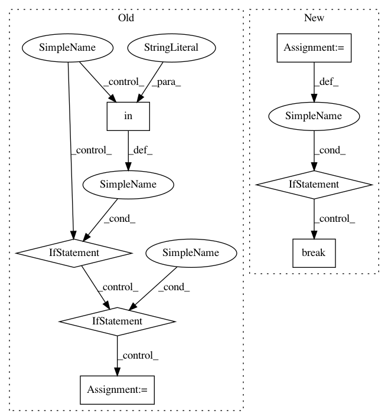

c56701baaf312882f33829441a9156fa0ec43e37,homeassistant/helpers/state.py,,reproduce_state,#Any#Any#Any#,49
Before Change
state.entity_id)
continue
if state.domain == "media_player" and state.attributes and \
"media_type" in state.attributes and \
"media_id" in state.attributes:
service = SERVICE_PLAY_MEDIA
elif state.domain == "media_player" and state.state == STATE_PAUSED:
service = SERVICE_MEDIA_PAUSE
elif state.domain == "media_player" and state.state == STATE_PLAYING:
service = SERVICE_MEDIA_PLAY
elif state.state == STATE_ON:
service = SERVICE_TURN_ON
elif state.state == STATE_OFF:
service = SERVICE_TURN_OFF
else:
_LOGGER.warning("reproduce_state: Unable to reproduce state %s",
state)
continue
if state.domain == "group":
service_domain = "homeassistant"
else:
service_domain = state.domain
After Change
domain_services = hass.services.services[service_domain]
service = None
for _service in domain_services.keys():
if (_service in SERVICE_ATTRIBUTES and
all(attr in state.attributes
for attr in SERVICE_ATTRIBUTES[_service]) or
_service in SERVICE_TO_STATE and
SERVICE_TO_STATE[_service] == state.state):
service = _service
if (_service in SERVICE_TO_STATE and
SERVICE_TO_STATE[_service] == state.state):
break
if not service:
_LOGGER.warning("reproduce_state: Unable to reproduce state %s",
state)
continue
In pattern: SUPERPATTERN
Frequency: 3
Non-data size: 7
Instances
Project Name: home-assistant/home-assistant
Commit Name: c56701baaf312882f33829441a9156fa0ec43e37
Time: 2016-03-09
Author: marhje52@kth.se
File Name: homeassistant/helpers/state.py
Class Name:
Method Name: reproduce_state
Project Name: cesium-ml/cesium
Commit Name: 384e8e0f8a91815568aa3d4c651c8c5e48979262
Time: 2015-12-17
Author: a.crellinquick@gmail.com
File Name: mltsp/util.py
Class Name:
Method Name: cast_model_params
Project Name: NeuromorphicProcessorProject/snn_toolbox
Commit Name: fc5da69efb1f5f897c664a9c6ed32fb17270afaf
Time: 2017-08-18
Author: bodo.rueckauer@gmail.com
File Name: snntoolbox/parsing/utils.py
Class Name:
Method Name: get_fanout
Project Name: home-assistant/home-assistant
Commit Name: c56701baaf312882f33829441a9156fa0ec43e37
Time: 2016-03-09
Author: marhje52@kth.se
File Name: homeassistant/helpers/state.py
Class Name:
Method Name: reproduce_state